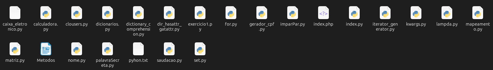
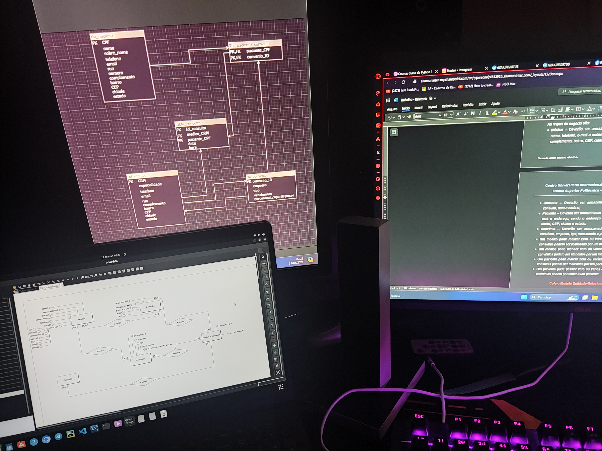

Introdução
Me chamo Gabriel Lopes Martins, Criei este site com a intenção de que você possa conhecer um pouco sobre mim.
E que também conheça minhas habilidades profissionais.
Quem sou eu?
Sou uma pessoa que busca constantemente soluções para os problemas, tanto pessoais quanto profissionais. Ao longo da minha vida, tenho enfrentado diversos obstáculos, mas sempre os encarei com determinação para superá-los. Tenho habilidade para trabalhar em equipe, reconhecendo a importância da colaboração para alcançar objetivos comuns. Demonstro humildade ao reconhecer que sempre há mais a aprender e estou sempre disposto a crescer, tanto como indivíduo quanto como profissional. Busco fazer a diferença onde quer que eu esteja, independentemente do cargo que ocupo dentro da empresa.
Gostos pessoais
Gosto de assistir filmes no meu tempo livre. Meus gêneros favoritos são ação, ficção científica e um bom filme de detetive.
Gosto de jogos eletrônicos, especialmente MOBAs, pois aprecio as estratégias envolvidas nesse tipo de jogo.
Gosto de programar para praticar, pois a prática leva à perfeição.
curiosidades
Sempre tive muito interesse em tecnologia e, quando comecei a trabalhar em uma loja de assistência técnica de computadores e celulares, iniciei um curso na Alura Cursos Online e desde então não parei mais de estudar. Sonho em um dia poder ingressar na área da programação.
Além do meu interesse e estudo em tecnologia, também sou apaixonado por música. Aprecio a paz de espírito e a concentração que tocar um instrumento proporciona. O violoncelo é meu instrumento preferido e atualmente é meu amor à primeira vista. Quando não estou estudando programação ou codificando algo em frente ao computador, dedico meu tempo ao estudo do violoncelo, que me ajuda muito na concentração.
Violoncelo
| Estudo sobre Modelagem de Banco de Dados |
|---|
|  |